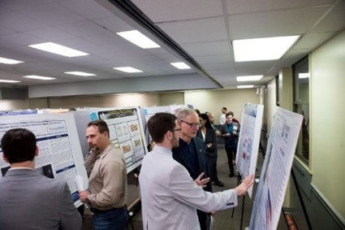
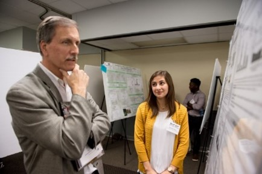
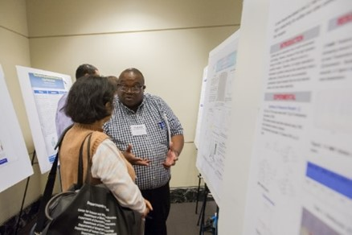
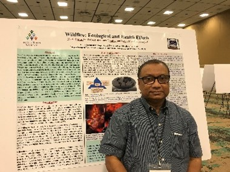
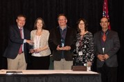
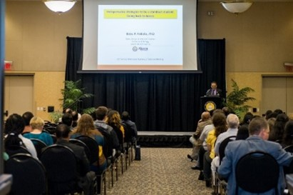
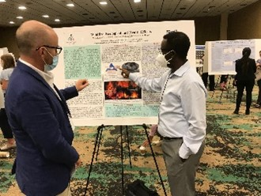
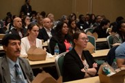
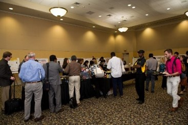
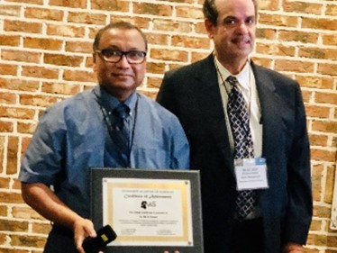

Dr. Zaman is a founding member and the Editor of the Bangla Journal of Interdisciplinary Sciences.
Mississippi Academy of Sciences
The Mississippi Academy of Sciences (MAS) was founded in 1935. MAS is affiliated with the National Science Foundation. The Academy helps coordinate and organize scientific seminars and symposia in Mississippi. Each year, the Academy holds an annual conference providing an excellent forum for MAS members to exchange creative ideas and information in the fields of agriculture and plant science; cellular, molecular and developmental biology; chemistry and chemical engineering; geology and geography; health sciences; history and philosophy of science; marine and atmospheric sciences; mathematics; computer science and statistics; microbiology and immunology; physics and engineering; psychology and behavioral neuroscience; science education; and zoology and entomology. Additionally, the Academy publishes the Journal of the Mississippi Academy of Sciences, a quarterly publication.
Dr. Zaman has been involved with this dynamic organization since 1992. He is a life member and a Fellow of MAS.










The Mahananda Trust
The Mahananda Trust is a nonprofit organization that was founded in 2007 with the aim to support education and social programs benefiting the local communities. This trust runs one high school and three primary schools in Chapainawabganj, Bangladesh. All four schools are recognized by the Bangladesh Ministry of Education and receive the Ministry's curricular support. Over 70 percent of the students are girls, and most of the students come from underprivileged families and need help with even the very basic necessities, such as school supplies, uniforms, shoes, and food. All four schools provide 100 percent free education to every student. Additionally, a limited number of students are being provided with further financial assistance in the form of scholarships to support their needs.
Among other social activities, the trust supplies free drinking water from a deep well to villagers and create public awareness toward child marriage prevention. The trust is run by a board of trustees, and Dr. Zaman is privileged to be on this board. If you would like to be involved with this organization and support its noble causes, please feel free to contact him.